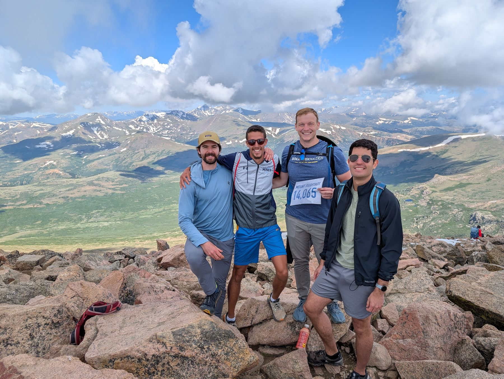
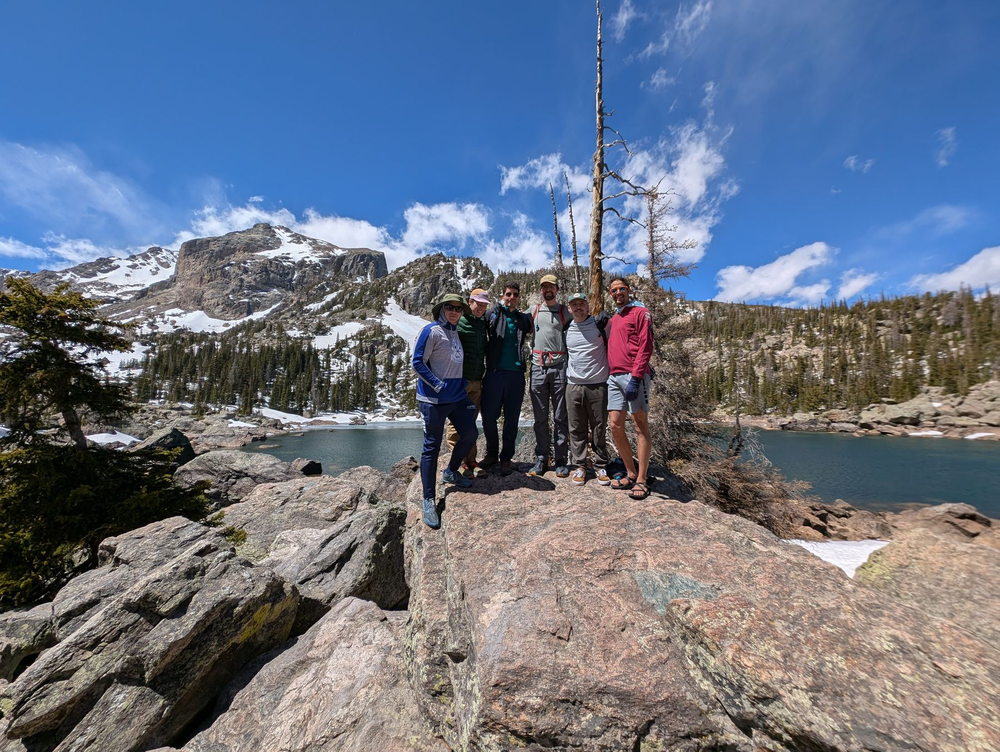
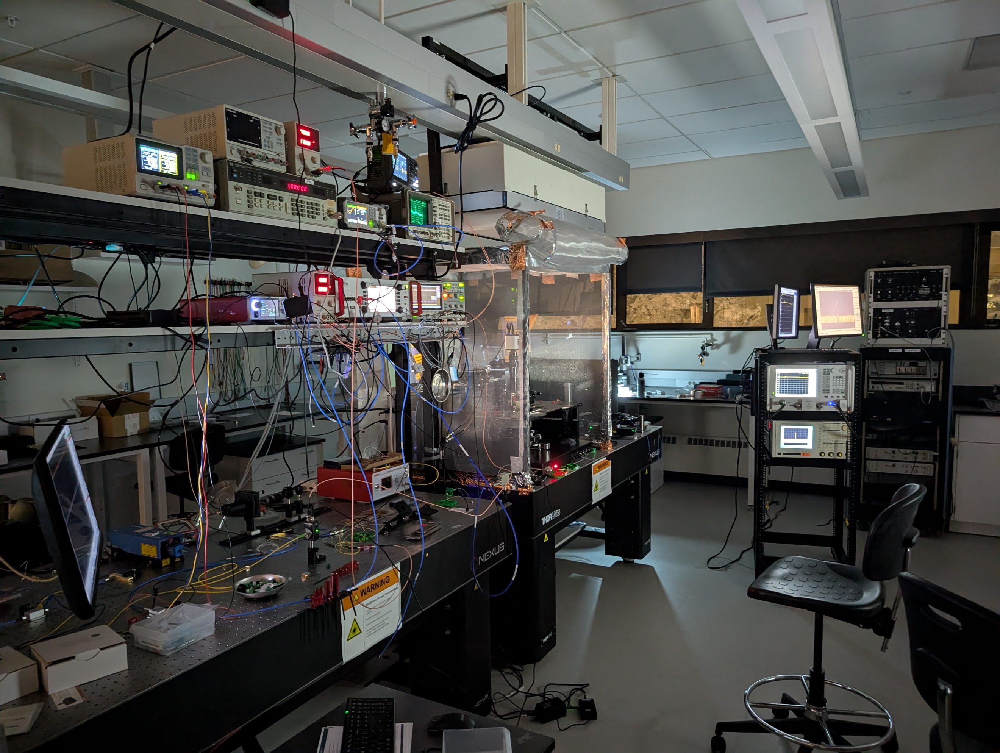

1.1RF sensing
Frequency-agile RF sensors.
Chip-scale electro-optic microwave sensors from kHz to tens of GHz.
Colorado School of Mines Electrical Engineering
We are microwave engineers developing low-noise electromagnetic sensors for remote sensing, Positioning, Navigation and Timing (PNT), Earth observation, communications, and quantum computing. We co-design microwave and photonic integrated circuits to push sensors beyond the limits of conventional analog electronics.

From kHz to optical · Classical and quantum sensing
Chip-scale electro-optic microwave sensors from kHz to tens of GHz.
Photonic integrated circuits for heterogeneous quantum computing networks.
Synchronizing remote optical atomic clocks for Positioning, Navigation and Timing.
Strontium titanate as a nonlinear medium to engineer microwave parametric processes, avoiding the magnetic sensitivity issues and frequency limitations of Josephson-junction amplifiers used in most superconducting-qubit platforms today.
General-purpose RF-photonic dual comb generators for LIDAR and gas spectroscopy.
Correlation radiometry for 3D spatial focusing and heterodyne architectures for interference cancellation, for non-invasive core body temperature measurement.
$1.7M+External funding secured
(Lab share)


Gabriel Santamaria-Botello, PhD

Gabriel Santamaria-Botello is an Assistant Professor in the Electrical Engineering Department at Colorado School of Mines, where his group designs microwave and photonic integrated circuits for RF receivers, transceivers, and sensors. Prior to joining Mines in 2023, he was a Research Associate at the University of Colorado Boulder in the Microwave and RF Research Group. In 2024 he was a Visiting Professor at EPFL's Laboratory of Photonics and Quantum Measurements. He earned his PhD cum laude in 2021 from Universidad Carlos III de Madrid, did a research stay at the University of Otago, and received his B.Sc. in Electrical Engineering from the University of Carabobo. His research spans microwave photonics, quantum sensing, superconducting circuits, remote sensing, radio astronomy and computational electromagnetics.
Recent milestones from the lab
In collaboration with CU Boulder and NIST, published in the Journal of Lightwave Technology.
Demonstration of ultra-low-noise millimeter-wave detection in a fully photonic lithium tantalate chip.
We were awarded the DARPA MTO PitchDay Award, to investigate RF-photonic sensors as part of the technical area "Commercially Catalyzed Defense Deployment". We were recently awarded a third phase to continue our research on photonic-enabled RF sensors.
Co-Founded by PhD student Connor Denney, Bifrost Electronics is developing a parametric amplifier technology initiated in our lab with the support of an Advanced Industries Grant.
With collaborators at EPFL, we demonstrated record-span electro-optic frequency comb generation in a fully photonic chip.
Recent work since joining Mines
Recent international & technical advisory engagements


Inside the Microwave & Photonics Lab





RF, mm-wave, THz and photonics · test and assembly
Microwave and photonic test benches in one lab: DC–50 GHz electronic measurement, mm-wave and photonics on-wafer probing, THz power metrology and ultra-low-noise lasers, plus in-house wire bonding and fiber-to-PIC packaging.
Electrical & Quantum Engineering at Mines
Free, browser-based · built in the lab
Interactive animation of voltage and current waves on lossless transmission lines: reflections, bounce diagrams, cascaded sections and standing waves.
Import Touchstone .sNp files and plot S-parameters on XY or Smith charts, with markers and publication-ready PNG/PDF export.
Layout tool for RF-photonic integrated circuits.
NetCDF (.nc) plotter for instrument data. Explore multidimensional sweeps with sliders and 2D, rainbow or 3D plots. Files never leave your computer.
We are looking for a postdoctoral researcher to work on microwave-to-optical quantum transduction for next-generation quantum computing systems. Backgrounds in microwave engineering, superconducting circuits, photonics, or quantum optics are encouraged to apply.
Email to apply